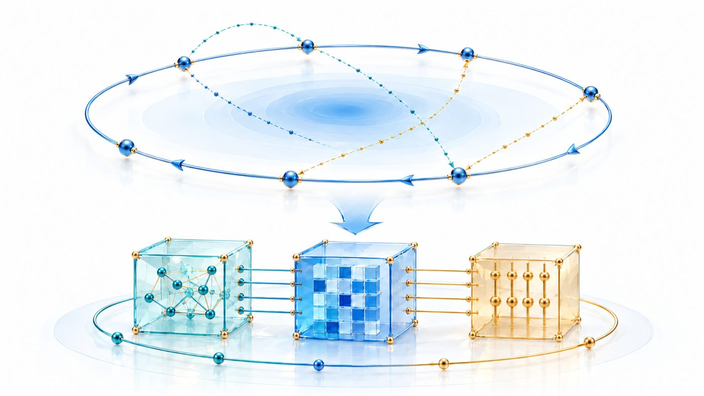
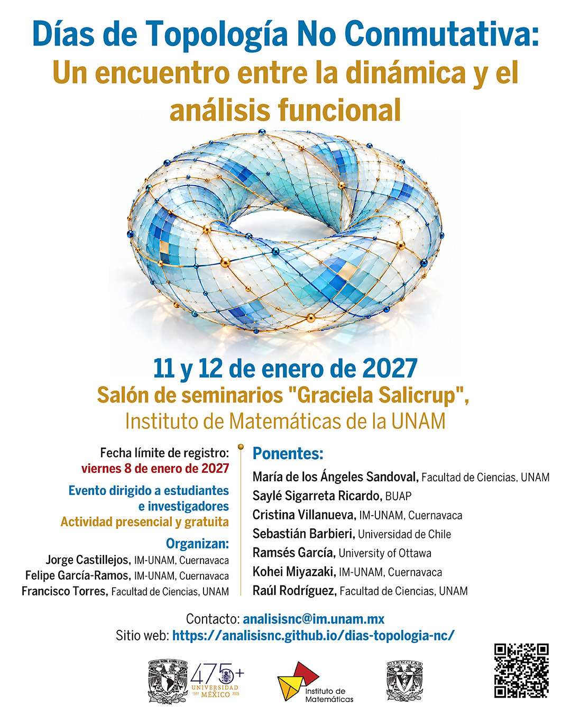

¿Qué quiere decir topología no conmutativa?
Todo espacio topológico compacto metrizable X puede estudiarse a través del espacio de sus funciones complejas continuas C(X), que es un álgebra con la multiplicación puntual. La dualidad de Gelfand nos dice que esta álgebra contiene toda la información topológica del espacio original. Pero ¿qué sucede si consideramos álgebras en las que la multiplicación no es conmutativa? Esta pregunta es el punto de partida de la topología no conmutativa, donde ciertas álgebras se interpretan como álgebras de funciones sobre espacios que ya no son espacios topológicos en el sentido tradicional.
Estas álgebras aparecen de manera natural en el estudio de los sistemas dinámicos topológicos, las acciones de grupo continuas y en la mecánica cuántica. Así, la topología no conmutativa establece conexiones sorprendentes entre la topología, el análisis funcional, los sistemas dinámicos y la teoría de grupos.
Los Días de Topología No Conmutativa están dirigidos a estudiantes de licenciatura y posgrado, así como a investigadores interesados en conocer esta área. Tendremos charlas introductorias sobre los conceptos fundamentales y los productos cruzados, charlas de investigación y espacios para hacer preguntas e intercambiar ideas.

Ponentes
- María de los Ángeles Sandoval Facultad de Ciencias, UNAM
- Sebastián Barbieri Universidad de Chile
- Cristina Villanueva IM-UNAM, Cuernavaca
- Saylé Sigarreta Ricardo BUAP
- Jorge Castillejos IM-UNAM, Cuernavaca
- Ramsés García University of Ottawa
- Felipe García-Ramos IM-UNAM, Cuernavaca
- Kohei Miyazaki IM-UNAM, Cuernavaca
- Raúl Rodríguez Facultad de Ciencias, UNAM
- Francisco Torres Facultad de Ciencias, UNAM
Registro
El registro cierra el martes 5 de enero de 2027.
Sede
Salón Graciela Salicrup
Instituto de Matemáticas, UNAM
Circuito Exterior, Ciudad Universitaria, Coyoacán, Ciudad de México
Cartel
¿Conoces a alguien a quien le encantaría venir? Compártele el cartel.


Organizadores
- Jorge Castillejos IM-UNAM, Cuernavaca
- Felipe García-Ramos IM-UNAM, Cuernavaca
- Francisco Torres Facultad de Ciencias, UNAM
¿Dudas? Escríbenos a analisisnc@im.unam.mx.